Black
prickly nudibranch
Atagema intecta
Family Discodorididae
updated
May 2020
Where
seen? This black nudibranch with prickly bumps is sometimes seen on some
of our shores, on coral rubble. It was previously known as Trippa
intecta.
Features: Variable in size, sometimes
1cm long, others up to 6cm long. Very dark maroon, almost black. There
are tiny prickly bumps all over its body. The feathery gills appears
similar to the rest of the body. The species should have a line of
pale or beige bumps along the upper body length, but few of those
seen had this. The foot has small white spots on the upperside and
is smooth and lighter on the underside. |
.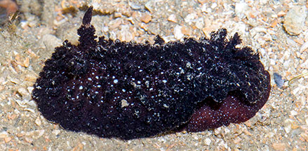
Chek Jawa,
Jul 05 |
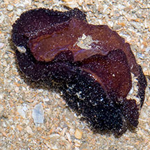
Smooth foot on the underside |
.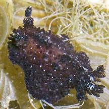
Tiny one about 1cm long.
Sentosa, Oct 04
|
|
|
| Black
prickly nudibranchs on Singapore shores |
| Other sightings on Singapore shores |
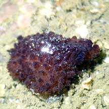
Changi Loyang, May 21
Photo shared by Jianlin Liu on facebook. |
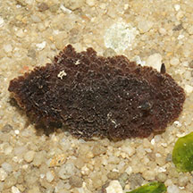
Changi, Dec 18
Photo shared by Abel Yeo on facebook. |
|
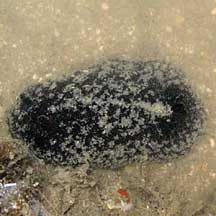
Chek Jawa, Oct 10
Photo shared by Neo Mei Lin on her
blog. |
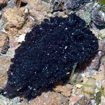
Pulau Sekudu, Jul 09
Photo shared by Marcus Ng on his
flickr. |
|
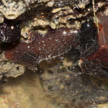
Tanah Merah, Jul 09 |
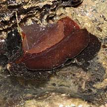
Photo shared by James Koh on his
blog. |
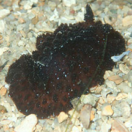
Sentosa Tg. Rimau, Jan 18
Photo shared by Abel Yeo on facebook. |
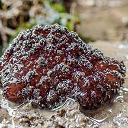
East Coast (PCN), May 21
Photo shared by Vincent Choo on facebook. |
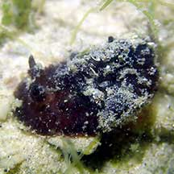
Sentosa Tg Rimau, Nov 21
Photo shared by Jianlin Liu on facebook. |
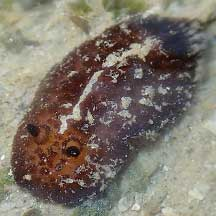
St. John's Island, Apr 22
Photo shared by Jianlin Liu on facebook. |
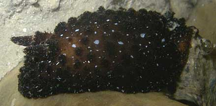
Pulau Hantu, Sep 10
Photo
shared by Toh Chay Hoon on her
blog. |
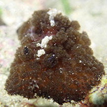
Cyrene, Apr 24
Photo shared by Tammy Lim on facebook. |
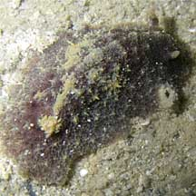
Pulau Semakau, Feb 08
Photo shared by Toh Chay Hoon on her
flickr. |
|
|
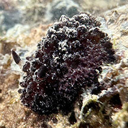
Terumbu Pempang Tengah, May 25
Photo shared by Tammy Lim on facebook. |
|
|
Links
References
- Tan Siong
Kiat and Henrietta P. M. Woo, 2010 Preliminary
Checklist of The Molluscs of Singapore (pdf), Raffles
Museum of Biodiversity Research, National University of Singapore.
- Debelius,
Helmut, 2001. Nudibranchs
and Sea Snails: Indo-Pacific Field Guide
IKAN-Unterwasserachiv, Frankfurt. 321 pp.
- Wells, Fred
E. and Clayton W. Bryce. 2000. Slugs
of Western Australia: A guide to the species from the Indian to
West Pacific Oceans.
Western Australian Museum. 184 pp.
- Humann, Paul
and Ned Deloach. 2010. Reef
Creature Identification: Tropical Pacific New World Publications.
497pp.
- Coleman,
Neville. 2001. 1001
Nudibranchs: Catalogue of Indo-Pacific Sea Slugs. Neville
Coleman's Underwater Geographic Pty Ltd, Australia.144pp.
|
|
|